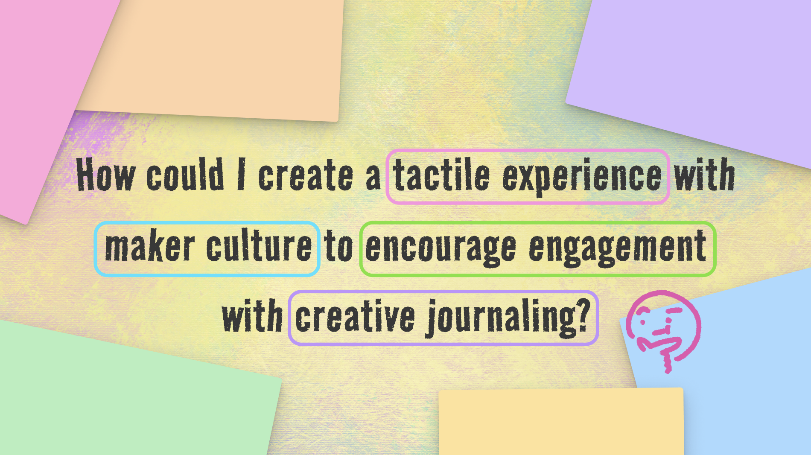

MINI CAPSTONE - 2026
Journal Table
ROLE Solo, Academic Project
DURATION 8 Weeks
PLATFORM Procreate, InDesign
OUTCOME: Interactive Experience, Binded Journal
Reigniting the spark and passion for analog crafts through and interactive experience
THE PROBLEM
As digital tools become more integrated into everyday life, physical creative practices such as journaling can sometimes feel secondary. While physical journaling isn’t disappearing, the accessibility and efficiency of digital platforms may influence what documentation and reflections tools people gravitate towards. This project explored how an interactive experience could encourage engagement with physical creative journaling, and reignite the spark and passion for hands-on crafting.
PROJECT EVOLUTION
My initial approach was to introduce the audience to creative journaling through a low-pressure, interactive booklet that offered a gentle introduction to journaling, alongside spread ideas they could experiment with.
INITIAL RESEARCH QUESTION
How could I create a tactile experience with maker culture to encourage engagement with creative journaling?


From this, I discovered that something as simple as a one-time use interactive booklet would not be enough to engage people into actually starting their journey in creative journaling, and the pressure of the blank canvas was another factor that kept people from starting.
From here, I shifted my approach and began experimenting with more hands-on activities. My focus then became understanding what motivated people to create, and whether tools such as prompts, timers, or guided activities were needed to help facilitate the process from afar.
UPDATED RESEARCH QUESTION

I tested different ways to encourage creative journaling :


From these tests, I found that directly involving them helped users create an actual connection to what they were interacting with. This helped me shape the final experience which was an open space journal table.
THE FINAL OUTCOME
Found that the most effective way to get them into the hobby/habit, is simply providing them with the experience and letting them freely explore.